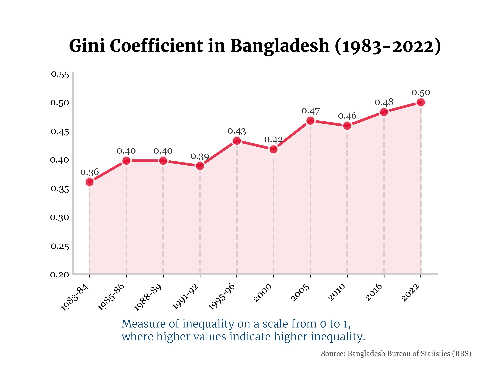

To complement the analysis on income shares, this project focuses on the Gini coefficient, a standard measure of statistical dispersion intended to represent the income or wealth inequality within a nation. A Gini coefficient of 0 represents perfect equality, while a coefficient of 1 implies maximal inequality.
Key Findings
The data, sourced from the Bangladesh Bureau of Statistics (BBS), shows a clear and concerning upward trend. The Gini coefficient has risen from 0.36 in 1983-84 to 0.50 in 2022. This quantitative measure confirms the qualitative story told by the income share chart: economic inequality in Bangladesh has significantly worsened over the past 40 years.
Technologies Used
This visualization was also created using Python's data science stack: Pandas for data handling, and Matplotlib/Seaborn for plotting. The design focuses on a clean line chart to effectively show the trend over time, with annotations to make the Gini scale understandable to a broader audience.